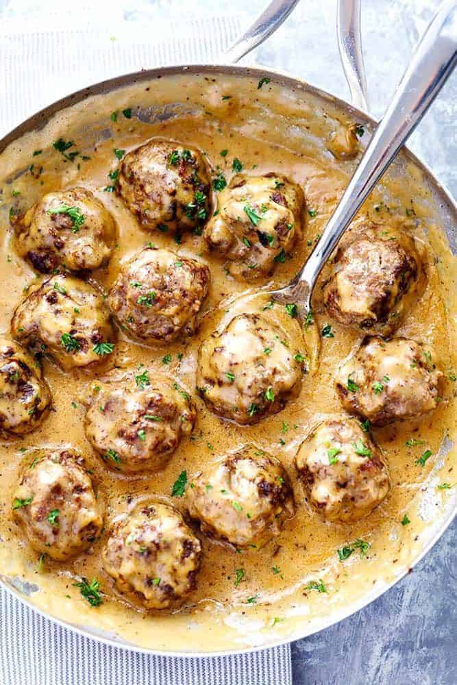

Swedish Meatballs

Description
Swedish meatballs, perhaps the country's most famous culinary item, are actually based on a recipe brought back from Turkey in the early 18th century by King Charles XII of Sweden. They are a part of both traditional holiday meals and a staple in everyday home cooking.
Ingredients
- Ground Beef
- Bread Crumbs
- Parsley
- Allspice/Nutmeg
- Onion
- Garlic Powder
- Salt and Pepper
- Egg
- Olive Oil
- Butter
- Flour
- Beef Broth
- Heavy Cream
- Worcestershire Sauce
- Dijon Mustard
Steps
- Mix: In medium sized bowl combine ground beef, panko, parsley, all spicee, nutmeg, onion, garlic powder, salt and pepper and egg. Mix till combined.
- Roll: Roll into 12 large meatballs or 20 small meatballs. In a large skillet heat olive oil and 1 tablespoon butter.
- Brown: Add the meatballs and cook turning continuously until brown on each side and cooked through. Transfer to a plate and cover with foil.
- Sauce: In the same skillet add 4 Tablespoons butter and flour and whisk till it turns brown. Slowly stir in beef broth and heavy cream. Add the worcestershire sauce and mustard and bring to a simmer till it starts to thicken.
- Simmer: Add the meatballs back to the skillet and simmer for another 1-2 minutes. Add salt and pepper to taste.